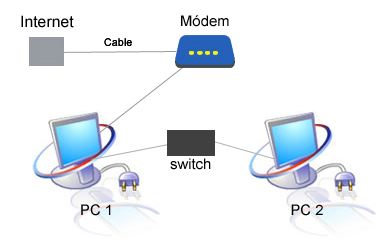
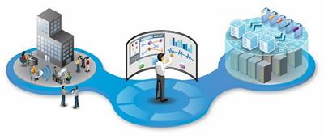
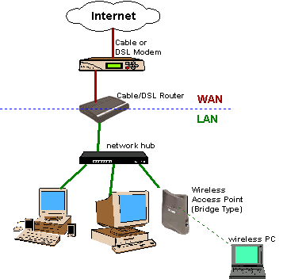
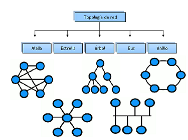
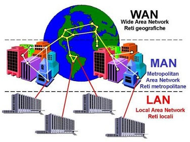

REDES
Una red informática es un conjunto de dispositivos interconectados entre sí a través de un medio, que intercambian información y comparten recursos. Básicamente, la comunicación dentro de una red informática es un proceso en el que existen dos roles bien definidos para los dispositivos conectados, emisor y receptor, que se van asumiendo y alternando en distintos instantes de tiempo.
DISPOSITIVOS
Los dispositivos conectados a una red informática pueden clasificarse en dos tipos: los que gestionan el acceso y las comunicaciones en una red (dispositivos de red), como módem, router, switch, access point, bridge, etc.; y los que se conectan para utilizarla (dispositivos de usuario final), como computadora, notebook, tablet, teléfono celular, impresora, televisor inteligente, consola de videojuegos, etc...
Los que utilizan una red, a su vez, pueden cumplir dos roles (clasificación de redes por relación funcional): servidor, en donde el dispositivo brinda un servicio para todo aquel que quiera consumirlo; o cliente, en donde el dispositivo consume uno o varios servicios de uno o varios servidores. Este tipo de arquitectura de red se denomina cliente/ servidor.
CENTRO DE CONTROL DE RED
El Centro de Control de la Red (CCR) o Centro de Operaciones de Red, es uno o más sitios desde los cuales se efectúa el control de las redes de computación, transmisión de televisión o telecomunicaciones Como Enlace Satelite y Fibra óptica. En idioma inglés la denominación es NOC o Network Operations Center.
El Centro de Control de la Red es responsable de monitorizar las redes en función de alarmas o condiciones que requieran atención especial para evitar impacto en el rendimiento de las redes y el servicio a los clientes finales.
CONFIGURACIÓN DE REDES
Montar una red local, cada vez resulta más fácil y económico, y son muchas las ventajas que podemos obtener, con una mínima inversión. Para comenzar podemos utilizar nuestro viejo Pentium 90 o 100 Mhz para conectarnos, pero debemos ser objetivos y si se requiere de aplicaciones multimedia o una buena conexión a Internet pues se recomienda tener mínimo un equipo celeron o Pentium 2.
Además de poder compartir la conexión a Internet, podemos utilizar nuestra PC para grabar nuestro CD con información que tengamos en nuestro disco, compartir impresoras, y un sin fin de utilidades
TIPOS DE RED
Otra de las cosas a tener muy encuenta es el tipo de red que queremos montar. Lo primero que tenemos que hacer es un diagrama, marcando la localización de cada uno de nuestros ordenadores, impresoras, líneas de teléfono, y enchufes. Esto nos será de gran utilidad para elegir el tipo de red que debemos instalar en nuestra casa
Hay tres tipos de redes entre las cuales podemos optar:
* Redes tradicionales (Ethernet), que utilizan una tarjeta de red y cables especiales para conectar todos
los dispositivos
*Red utilizando la línea telefónica, que utiliza los cables del teléfono de casa para conectar todos los ordenadores
* Redes sin cable, utilizan señales de radio para recibir y enviar los datos entre los ordenadores
ARQUITECTURA DE REDES
Es un sistema funcional compuesto de equipos de transmisión, de programas y protocolos de comunicación y de una de la infraestructura alámbrica o radioeléctrica que permite la transmisión de datos entre los diferentes componentes.
TOPOLOGÍA DE RED
El término topología se refiere a la forma en que está diseñada la red, bien físicamente (rigiéndose de algunas características en su hardware) o bien lógicamente (basándose en las características internas de su software). Las redes Ethernet a menudo están formadas por múltiples segmentos individuales interconectados por repetidores. Los segmentos están interconectados entre si siguiendo lo que se denomina un patrón. Cada segmento Ethernet es una rama individual de la red completa.
La topología de red es la representación geométrica de la relación entre todos las ramas y los dispositivos que los enlazan entre sí (habitualmente denominados nodos). Para el día de hoy, existen al menos cinco posibles topologías de red básicas: malla, estrella, árbol, bus y anillo. Sin embargo en la red Ethernet solo utilizamos la topología estrella y bus.
TIPOLOGÍA DE RED
De un punto de vista tipológico, la arquitectura es respectivamente calificada como LAN (local Area Network), MAN (Metropolitan Area Network) y WAN (Wide Area Network) cuando la red se extiende en un perímetro local (menor a 1 km), metropolitano (menor a 100 km) y distancia larga.
